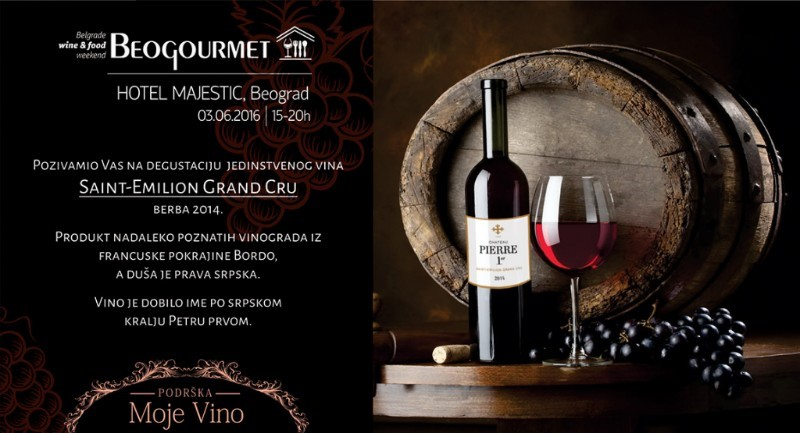

Tehnologija
- Korišćenjem mobilnih tehnologija moći ćete sami da upravljate web sajtovima koji su optimizovani i za pregled i korišćenje na mobilnim telefonima.
- Tehnologija QR kodova, kao i softverski i analitički alati koje smo razvili omogućiće Vam da istog trenutka kada neko od Vaših potrošača skenira kod Vi budete informisani o tome koje vino je predmet interesovanja kao i na na kojoj geografskoj lokaciji se to dogodilo.
- Integracija sa društvenim mrežama poput Facebooka, Twittera i Google+, poput deljenja linka ili izražavanje poput popularnih znakova (like) doprineće porastu popularnosti Vaših vina i vinarije.
Servisi
- Uz pomoć servisa MojeVino™ orijentisani ste i obraćate se direktno vašim potrošačima. Potrošaču prosleđujete informacije o opisu vina, načinu serviranja, predlozima za uparivanje, video zapise, fotografije, kao i lokaciju vinarije. Potrošač sve informacije dobija direktno od Vas
- Ukoliko plasirate svoja vina na strana tržišta, servis Moje Vino™ Vam omogućava da se potrošačima obratite na njihovom maternjem jeziku (engleski, ruski, nemački, kineski, itd...)
- Sajt optimizovan za mobilne urađaje omogućava Vam da postavite sadržaje u različitim formatima, uključujući tekst, slike, video, mape, linkove za preuzimanje kao i kontakte i integraciju sa društvenim mrežama
Marketing
- Kreirajte i jednostavno prilagodite dizajn koji je usklađen sa Vašim korporativnim imidžom
- Komunikacijski kanal je direktno Vaš sa Vašim potrošačem, bez obzira na način distribucije
- Integracija servisa Moje Vino™ sa Google Analitics vas trenutno informiše o broju skeniranih QR kodova kao i o lokacijama na kojima se to dogodilo
- Vaše QR kodove iskoristite ne samo na bocama, već i na ostalom propagandnom materijalu, brošurama, časopisima i drugo
- Servis Moje Vino™ vam omogućava da u realnom vremenu uredite adrese do kojih vode generisani QR kodovi, tako da u svakom trenutku možete promeniti poruku ako su boce već označene i distribuirane.
News: MojeVino on Beogoutmetu
Pozivamo Vas da posetite jedinstveni vinarski i gastronomski skup na Balkanu koji se održava u petak 03.06.2016 od 15-20h u hotelu Majestic u Beogradu.
Bićete u prilici da degustirate vina vrhunskog kvaliteta, inostranih i domaćih proizvođača, kao i da učestvujete u nagradnog igri skeniraj i osvoji vina Podruma Panajotović.
Jedno vino će svakako biti zvezda dana, radi se o vinu iz Bordoa, to jest Saint-Emilion Grand Cru, berbe 2014 koja je bila izuzetno dobra, a vino koje je g-din Jean Dutruilh nazvao po srpskom kralju Petru prvom.
Evo šta je specijalno za Beogourmet izjavio g-din Jean Dutruilh
“ Stvarajući ovo vino, razmišljao sam o imenu koje ću mu dati, imenu koje će spajati Bordo i Šumadiju, Francusku i Srbiju. Pred Vama je vino Pierre 1er, koje će nas podsetiti na omiljenog vladara Srbije, francuskog prijatelja, kralja oslobodioca, kralja Petra I “
Jean Dutruilh, Chateau Pierre, Bordeaux